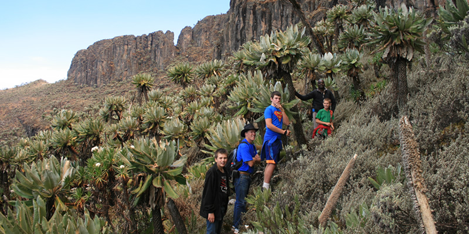
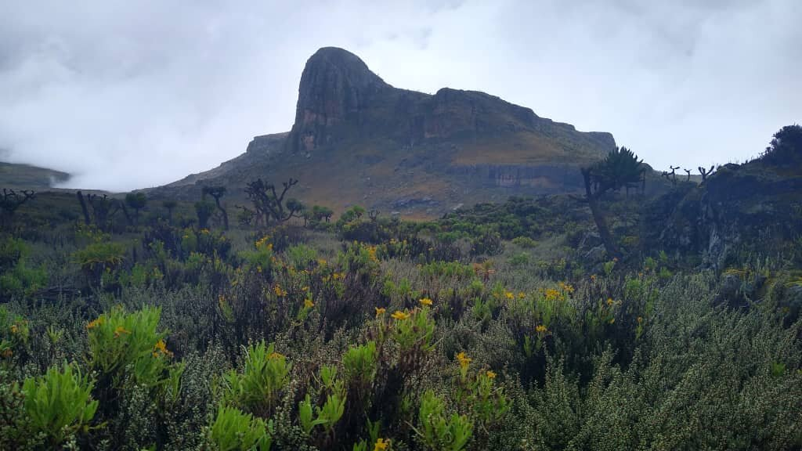
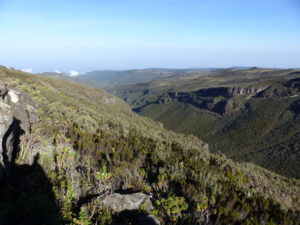
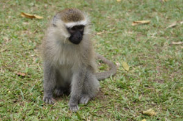
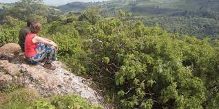
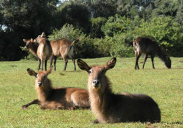
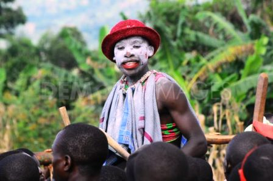
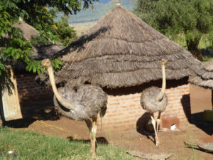
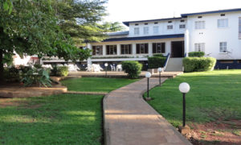
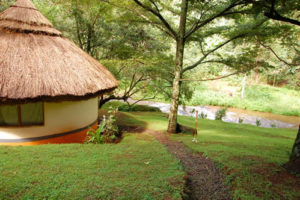

Mount Elgon National Park is a UNESCO Man and Biosphere Reserve located along the border between Uganda and Kenya. The park covers an area of 494 square miles. A larger part (430 square miles) of the park is on the Ugandan side of the border. The Ugandan section was elevated from a forest reserve into a national park in 1992. The park gets its name from Mount Elgon which is a prominent physical feature in the park. Mount Elgon is an extinct volcano that erupted over twenty four million years ago. It is the highest volcanic mountain in East Africa and the 8th highest mountain in Africa. Mount Elgon has the largest caldera in the world which is about 60 kilometers long and 40 kilometers wide. This particular Caldera is a result of magma getting drained from the bottom leading to the collapse of the cone. Scientists believe that at one point in time, Mount Elgon was the highest mountain Africa before millions of years of erosion reduced its height substantially.
The fertile slopes of Mount Elgon encourage the group of vegetation that varies depending on altitude. They include montane forests in the lower areas, bamboo forests on higher grounds and alpine-moorlands towards the summit. Over 400 species of plants and 143 of birds have been recorded. Half of Uganda’s species of butterflies are found in Mount Elgon National Park with the endangered Maathai’s Lonleg dragonfly was discovered in 2000. The lower slopes of the mountains support a variety of mammals like black-and-white colobus Monkeys, blue monkeys, buffalos, elephants, red-tailed monkeys, spotted hyena, Oribi, Defassa waterbuck, Bushbucks and smaller antelopes.

The main tribes living in the Ugandan side of the park are the Sabiny and Bagisu.These tribes rely on subsistence farming. The Bagisu have specialized in the growing of Arabica coffee which does well in the fertile soils on the lower slopes of the mountains. The higher slopes of the mountains are protected and managed by the Uganda wildlife Authority in close cooperation with Kenyan counterparts. The Mountain Elgon national park office is located along Masaba Road in Mbale town. This is where tourists go to seek information or acquire permits for park related activities.

The distance between Kampala city and Mount Elgon National Park is about 230km. The roads are well paved and made of tarmac but traffic jam is a problem on the Kampala – Jinja highway. It takes between 4 to 5 hours to reach Mbale town from Kampala through the towns of Jinja and Iganga. The journey by road offers opportunities to stop and see amazing places like the source of the river Nile and Mabira forest. From Mbale town, one needs to drive to the park offices outside the town or head straight to the nearest mountain climbing starting point in Budadiri. Visitors can hire a car or use public means to get to the park but arranging your travel with a good tour company is more convenient.
For visitors who don’t like long road journeys, there is an option to book a chartered flight from Entebbe international airport to Soroti airfield near Mount Elgon. From the airfield, one would need to travel by road for about one hour before reaching Mbale town or Kapchorwa.
Mountain Elgon National Park is more known for mountain climbing and nature walks. Apart from reaching the peak, climbing Mount Elgon offers great opportunities to explore a massive caldera, caves, cliffs, gorges, hot springs, mesas and waterfalls. Mount Elgon National Park has a sizeable population of large mammals like elephants, buffaloes and primates. Apart from climbing the mountain, tourists visit the park for game viewing, nature walks, bird watching, cave exploration and camping. Activities can be arranged both inside and outside the park to places like the Sipi Falls and Wildlife reserves in Kapchorwa.
Climbing Mount Elgon has its advantages compared to the Rwenzori Mountains or Mount Kilimanjaro in Tanzania. It is less expensive, less strenuous and with temperatures that are acceptable even at the summit. The unique thing about climbing Mount Elgon is not reaching the Wagagai peak but descending from the peak to spot the largest caldera on earth.
 Climbing Mount Elgon takes between 4 to 6 days depending on the trail used. There are three main starting points – The Salsa Trail, Pisa Trail and Sipi trail. The Salsa Trail also known as the Buddukiro trailhead is a shorter trail but with very steep climbs. It starts from near Mbale town and takes only 4 days to reach the peak. Though it is the most direct route, it goes through the thickest area of the bamboo forests in the park. The second trail is the Pisa trail also known as the Kapkwata trailhead. This trail starts from a forest in Kapkwata and passes through great Podocarpus forests. This is the longest (7 days) but with few steep areas. The trail provides opportunities to view the parks animals and birdlife. The third trail is the Sipi Trail which begins from the Kapkwai forest exploration center. It takes between 4 to 6 days to reach the peak through the Sipi trail.

In order to see the best of everything and see more of the mountain features, hikers can ascend via the Sipi Trail and descend using the Salsa trail. More adventurous hikers may start from the Ugandan side and descend at the Kenyan side. Hikers who choose to end their hike in Kenya need paperwork to cross the border. The migration office in Mbale can help with acquiring the border crossing papers is required by their colleagues in the Kenyan side.
Before climbing to the top of the mountain, hikers need to report to the Uganda Wildlife Authority offices outside the main town. Climbing Mount Elgon costs $75 per day for international visitors including park entrance fees. The amount also covers ranger/guide fees. Hikers also need to hire porters and cooks to escort them and help setting up camp. It is a good practice to give extra tip to the guides, porters, cooks and even park rangers.
Those who are not ready to go all the way up to the mountain peak can request for shorter day hikes or exploring some of the numerous caves on the slopes of the mountain. The three most visited caves are Chepnyali, Mackingeny and Kitum. These caves attract park mammals like elephants and antelopes that come to lick salt from the walls. 
There are other ancient caves like those found in Budadiri with paintings from thousands of years ago. The Khauka and Kapkwai caves in Wanale are a favorite with visitors because of their structure and numerous bats that provide manure from their droppings. These caves were used as shelter by the local people and their domestic animals.
The Nyero Rock Painting Caves outside Mbale town are also worth a visit. These caves used to shelter the first humans to roam the earth. They left their mark with amazing paintings depicting the kind of like they lived thousands of years ago.
Bird watching in Mount Elgon national park involves spotting species found nowhere else. Birds can be spotted in several places including the thick shrubs of the park, the Cheptui falls and at the Forest Exploration centre in Kapwai. The park is home to the African Blue Fly-catchers, African Goshawk, Baglafecht Weaver, Black and White Casqued, Chin-spot Batis and the Baglafecht Weaver, black collared Apalis, Black-shouldered Kite, Chubb’s Cisticola, Crowned Hornbills, eastern bronze-naped pigeon, Doherty’s and Luhder’s Bush-Shrikes, Golden Winged and Tacazze sunbirds, Hartlaub’s turaco, Mackinon’s Fiscal, Ross’s and Hartlaubs Turacos, White-chinned Prinia. In Uganda, the endangered Jackson’s Francolin and lammergeyer are only found in Mount Elgon national park
The heavy rains and fertile soils in Mount Elgon National Park support the growth of thick forest and other vegetation that make nature walks extremely fulfilling. While climbing the mountain or visiting the caves, visitors encounter countless birds, wildlife and thick montane forest. Entering the moor lands in the uppers slopes of the mountain exposes visitors to beautiful landscape and undiscovered wilderness. 
The Forest Exploration Centre near the Sipi Falls organizes 3 to 7 Kilometer day hikes that offer more opportunities to marvel at the plants, ridges, valleys, caves and animals in the park.
There is also a trail that leads to the large Tutum cave away from the centre. Visitors who walk along this trail have an opportunity to spot several birds and primates like the black and white Colobus. The Tewei Hill where the former king of the Sabiny used to hold meetings is also worth visiting. This hill has wonderful views of the Mount Elgon peak, the Karamoja plains and the Sipi Falls.

Mountain Elgon national park is a great place for wildlife viewing. Game drives are arranged to take tourists to the best location where to see the animals. Among the animals to look out for are the hyena, leopard and duiker. The park has several primates like the blue monkeys, vervet monkeys, colobus monkeys and buffalo.
Mountain Elgon National Park and the surrounding are suitable for camping. The park authorities have set up camping bases along the mountain climbing trails for those hiking to the top of the mountain. Camping is not allowed near the caldera itself. Tourists need to move with sleeping bags, tents, rain jackets, warm clothes and a camp stove that is fuel efficient. Tents and sleeping bags can be hired from the park office located in Mbale town.

The rivers that flow from the top of the mountain pass though cliffs forming beautiful waterfalls. The Sipi falls are the most attractive waterfalls in the area. These beautiful falls are located just outside the park boundary before the Forest Exploration Centre. Reaching the falls requires hiking through local village homes and farmlands. The areas around the falls have hotels and lodges of good quality. Apart From the Sipi Falls, other waterfalls can be sighted in Bulago, Chebonet, Sisyi and Wanale.
The Mount Elgon and Sipi Falls are known for having mountain/rainbow trout. These fish fascinates anglers because of their beautiful colors and act of struggling when caught. In the Sipi area, the fish are caught and released back to the water. For the highest possible success, the activity needs to start in the morning. Guides and are available to take anglers to the best fishing spots. Anglers need to move have their own fishing gear and permit. Other packing items include lunch and drinking water
Abseiling involves going down a cliff with a firm rope-like device fastened around the harness. The Sipi Falls are the only area where abseiling is organized in Uganda. The activity is well organized with good imported equipment, well trained instructors and guides who ensure the safety of participants.
The entire Mountain Elgon Region including Mbale and Kapchorwa has good biking routes. One such route is the one starting from Sipi trading centre to a hill in Chema Kapchorwa. Kapchorwa District produces most of Uganda’s best long distance runners. There is a running route that has been designated for training the runners near the Sipi area that can also be used by travelers for biking or jogging.
Rock climbing is one of the popular activities that can be arranged outside Mount Elgon National Park. The Sipi Falls area is particularly suitable for rock climbing. The most demanding climb in the Sipi area is about 35 meters. Hikers can also drive to the nearest town Tororo which has a beautiful rock just next to the town centre. Climbing Tororo rock takes about 3 hours. The reward for reaching the top are beautiful views of the town below, villages and mount Elgon.
The mountain Elgon region receives good rains and has very fertile soils that support the growth of the Bugisu Arabica coffee. Visitors can request for an organized mission to learn about how the coffee is planted, picked and processed. A local guide usually leads visitors to the home of one of the prominent local farmers in the area. This activity can be done near the Sipi Falls or by going directly to the processing factory that buys and processes farmers products near Budadiri.
A small group of Abuyudaya Jewish Community has lived in the Sipi and Mount Elgon areas for over 100 years. They are Jews by choice and not by birth but have converted to the Jewish tradition. The Abuyudaya Jews work together other religious denominations like the Pentecostal churches. The group has made an impact in the surrounding communities by building schools and a large hospital with a modern dental unit. The schools follow both the Jewish and Ugandan curriculum. The Abuyudaya also buy Bugisu Arabica coffee from local farmers at a reasonable price.
The Bagisu still practice an old culture of initiating young men into adulthood through a series of ceremonies that end with circumcision. No man would be allowed to marry before undergoing the full ritual process and getting circumcised. No lady would marry a man who wasn’t circumcised or had not gone through the standard rituals. During the months of August and December, the whole town and villages of Mbale are full of crowds singing and dancing while escorting young men to receive blessings and gifts from their relatives before heading for the circumcision site. The site brings together thousands of people to witness the public ceremony.

The Sabiny practice female circumcision but this has been outlawed due to pressure from female human rights groups. Some people still circumcise their daughters in secret. Another interesting cultural activity is the Budadiri Cultural Walk near Mount Elgon. There is Bugusi cultural group that organizes cultural dances, storytelling and information about their cultural heritage. This group can teach tourists how to cook and eat tasty bamboo shoots locally known as malewa.
: The Pian Upe and Matheniko Game Reserves are located in the great Karamoja plains after Mount Elgon. These two reserves cover an area of 2,788 square kilometers and are the second largest protected areas in the country.

The reserves and particularly swamps like Loporokocho are home to several bird species like the African Hill Babbler, Alpine Chat, Black-throated Wattle-eye, Dusky Turtle Dove, Eastern Bronze-napped Pigeon, Grey Cuckoo-Shrike, Hartlaub’s Turaco, Lemon Dove, Mountain Yellow Warbler and the Thick-billed Honey guide. The wildlife species here include the Bright’s gazelle, lesser kudu, ostriches and the roan antelope. In Uganda, most of these animals can only be found in Kidepo Valley National Park.The Matheniko Bora Wildlife Reserve has cave complexes with paintings that are over 2000 years old.
• Like any mountain that is above 2600 meters, there is a real possibility of getting altitude related sicknesses especially for first-time climbers. Altitude illnesses affect anyone without regarding former experience, fitness or age.
• You need to move with park rangers and porters when climbing to the top of the mountains or taking part in activities like wildlife viewing and camping. By hiring/employing these porters, you help support the local community and contribute to the overall conservation of the park and wild animals. When communities realize the benefits of tourism to the community, they are less inclined to poach park animals. The porters and rangers in the park are certified and trained in first aid treatment. The rangers share vital information about the different plant and animal species with visitors to the park. The overall cost of each guide shouldn’t exceed $15.
• The best time to visit Mount Elgon National Park is during the dry (June – August and December – March) seasons. It is important to note that hiking to the top of the mountain and all other park activities continue even during the wet/rainy season. It is also important to note that the mountain receives rainfall almost throughout the year. So expect rain even during the dry seasons in Uganda.
• A parking list for Mount Elgon national park should include bottled drinking water, enough food supplies, equipment for cooking, first aid kit, flashlight, gear for rain, hand gloves, a hat, hiking shoes, sleeping bag, a tent and warm clothing.
Accommodation facilities can be secured within and outside the park. Most of the hotels offer a combination of luxurious, mid-range and budget rooms. The luxurious hotels facilities are found in Mbale town, Kapchorwa town and the Sipi Falls area.
These cottages are located at the entrance of the National Park and were initially designed for students who come to visit the forest exploration centre but are now open to Tourists. The facility has 4 simple cottages and 4 tents implying that only a few residents may reside in the cottages on a given day. Food and drinks can be bought from the nearby canteen
This is a luxury hotel located 2 kilometers away from Mbale town center and near Mount Elgon. From any of the 94 hotel rooms, one can be rewarded with amazing views of the Wanale Hill and Mount Elgon. The hotel has beautiful gardens with palm trees and a large parking space. Other services include a restaurant, a large swimming pool, a bar, a gym and Sauna
This hotel is owned by Italians. It is built 2 kilometers away from the town center along the Masaba road. There are thirty self-contained rooms with quality bedding and a bathroom. The hotel has a large garden, a swimming pool, a restaurant, a bar, a pool table, spa, conference rooms and a small golf field. The hotel shuttle picks clients to and from town
Kayegi hotel is also found along Masaba road and offers mid-range priced rooms. Though the prices are affordable, the quality of the rooms and services are good. The hotel is a popular place for organizing retreats, seminars and workshops for government and non-government organizations. The hotel has twenty five self-contained resident rooms that are surrounded by beautiful gardens. There are conference rooms, a bar, a restaurant, a large parking place and free wireless internet.

This is a budget hotel built along the road to Kumi District. The hotel rooms are very clean with a table and a chair. Other facilities include a restaurant and a bar.
This hotel is built in the town of Kapchorwa along the slopes of Mount Elgon with good views of the Teso and Karamoja plains. The hotel has luxury, mid-range and budget rooms and can host 100 clients in a day. The hotel serves good Bugisu Arabica coffee with a sweet aroma. Both local and international foods are served for breakfast and Dinner. Camping tents are available for clients who are interested in setting up a camp outside. The hotel also organizes activities like visiting the Sipi Falls, climbing Mount Elgon, Bike racing and marathons.
This hotel is found in the town of Kapchorwa along the main road going to Mbale. The hotel offers budget services and self-contained rooms that are neat. The hotel also has conference rooms, a pool table, a bar and a restaurant which prepares Indian, Ugandan and other international dishes. It is a perfect place for those who intend on climbing Mount Elgon, visiting the Sipi Falls or visiting the Forest Exploration Centre.

This lodge is built near the beautiful Sipi Falls and along the Kapchorwa to Mbale road. The lodge is located a few walks from one of the park gates and Forest Exploration Centre. One of the three Sipi falls is found near the lodge. Sipi River Lodge is beautiful designed with large rooms. There are has beautiful gardens and caves near the falls that can be explored by visitors when free.